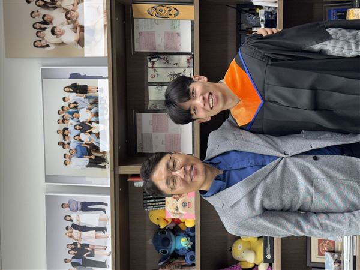
A-raw
원본 (회전 없음)
8가지 회전 변형을 각 사진에 적용했어요. 올바른 방향의 라벨(예: B-90cw)을 알려주세요. 두 사진 모두 같은 변형이 정답일 수도 있고, 다를 수도 있습니다.
라벨 설명: A=원본, B=90도 시계방향, C=180도, D=90도 반시계, E=원본+좌우반전, F=90시계+반전, G=180+반전, H=90반시계+반전

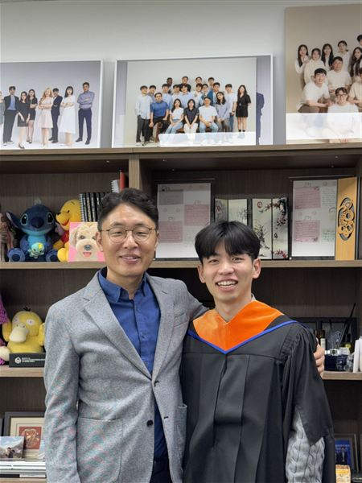
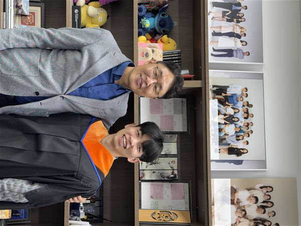
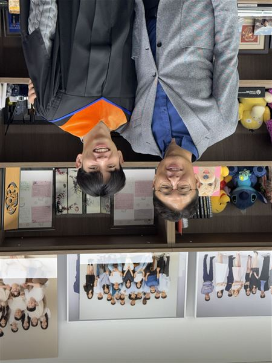
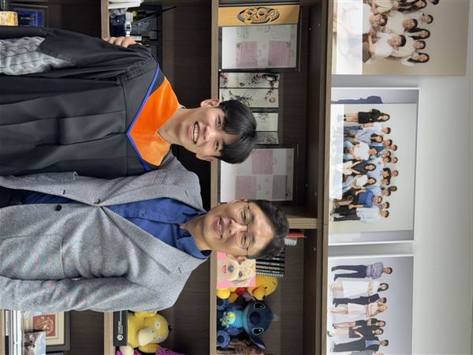
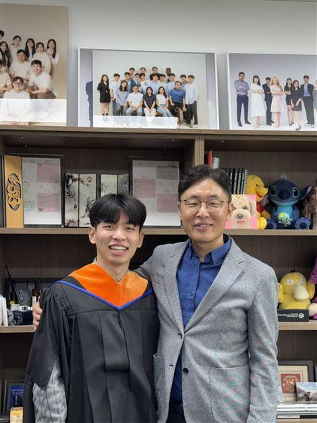
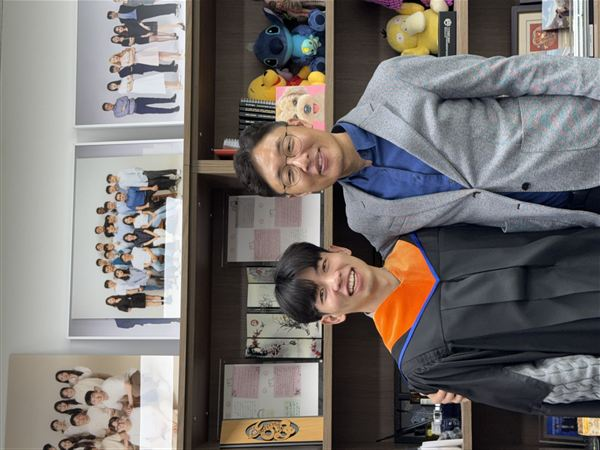
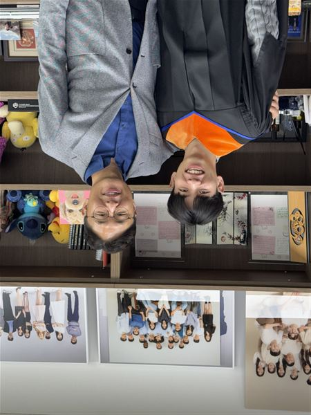
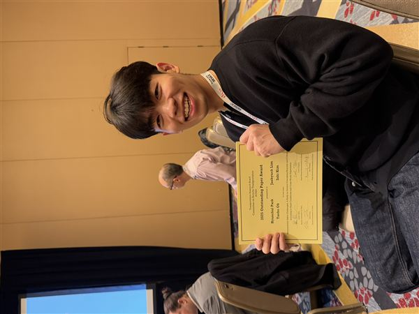
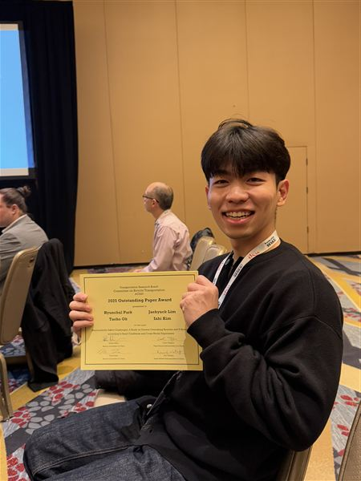
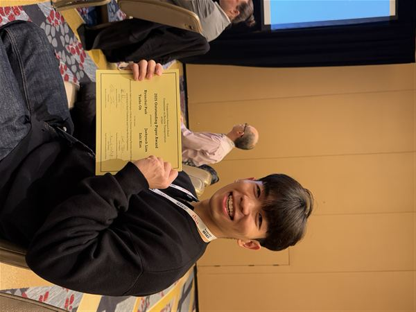
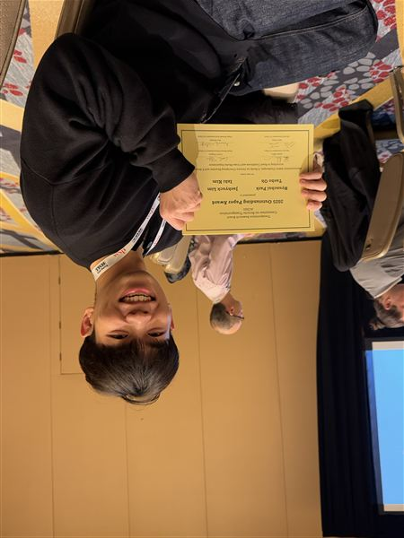
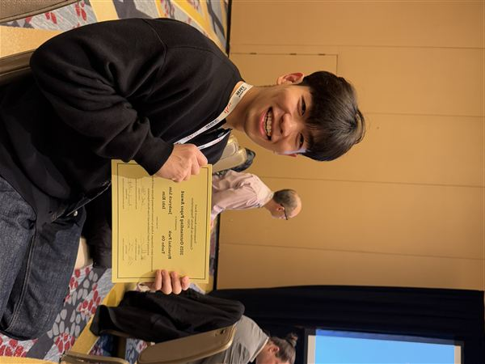
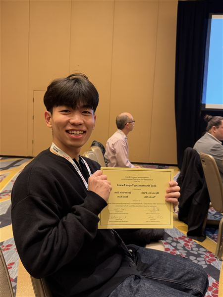
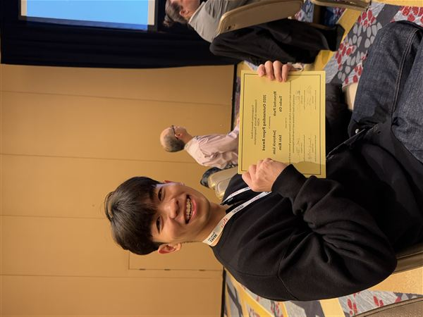
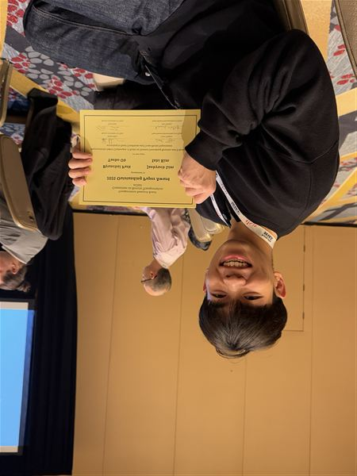